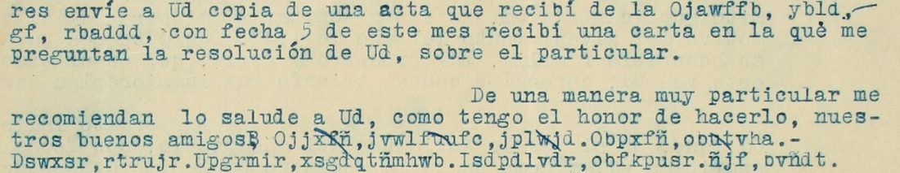

At a glanceKnown key applied · partial (69% of the cipher)
- The letter
- A typed letter of two pages, “Enero 12 de 1922”, to “Señor Dn. José Gonzzalez, N. O.”, signed in cipher “F. Vbpfihc”, in clear Spanish with 11 runs of lower-case cipher words (32 words).
- Where
- CEHM-Carso, Mexico City, Fondo DCXXI (Archivo de Félix Díaz), DCXXI.3.323.1 (archivo no. 91121), two images. No DECODE record is cited in the notes. Part of catalogue entry 1445, whose other letters are not read here. The archive’s record says “incluye claves no descifradas”.
- The cipher
- A Gronsfeld-type shift over the 27-letter Spanish alphabet: each plain letter moved on by 3, 1, 3, 3, 1, 3 … places (key 313), starting again at every word. The letter says in clear: “anule la 103, y haga uso de la 313”.
- How it was read
- With Narváez’s published key 313 (from the Wellington letter of the same fondo), applied unchanged, so the whole letter is held out. The key 103 was tried too and gives no sense.
- What it says
- The death of a General Landeros in the district of Huejotzingo; a plan to “nombrar una junta”; a newspaper “El Látigo” to be printed in neighbouring Tlaxcala; greetings from named friends; a cover address in Puebla; signed Sánchez.
- Still open
- Three words are holes (one occurrence each, or illegible) and seven carry a typing slip, so 22 of 32 is under the 95% bar. Who Sánchez is, and who “José González” is (the contributor’s inference: Félix Díaz), is not settled by the letter.
- Credit
- The key is Roberto Narváez’s (2015). Transcription and application by WAINUT (a Dutch AI company) with AI language-model agents; no human palaeographer checked the text. The project re-ran the check script, decoded every run with its own decoder and compared all 11 runs with the images.
01 The letter
The letter is typed, dated “Enero 12 de 1922”, and addressed to “Señor, Dn. José Gonzzalez, N. O.” (New Orleans, according to the contributor). The contributor takes the name to be a cover name of Félix Díaz, from the fondo and the subject; the letter does not name Díaz. The archive’s record has the signature as “ILEGIBLE, MANUEL”; in the letter the signature is a cipher word that reads SÁNCHEZ. In the typed Spanish the writer reports the death of a friend and on a newspaper he is founding, which is to be printed in the neighbouring state of Tlaxcala so that the governor of his own state cannot easily suppress it; names, places and the paper’s title are typed in lower-case cipher.

02 The key
The key is the one Narváez (2015, pp. 125-126, as the contributor and the contributor’s reviewer report it; the project did not read his paper) solved in the Wellington letter DCXXI.6.588.1 of the same fondo: a Gronsfeld-type shift over the 27-letter alphabet A-N, Ñ, O-Z, with the cycle 3, 1, 3 (cipher = plain + 3, +1, +3, +3, +1, +3 …). Here the cycle starts again at every word; commas separate the words of a name. The letter itself names it: “me indica anule la 103, y haga uso de la 313 […] desde hoy he hecho uso de ella”. The key 103 was also tried and gives no sense. key_frozen.tsv holds the rule in three entries (position in the word modulo 3: shift 3, 1, 3).
03 The test
The key does not come from this letter, so the whole letter is held out and nothing was frozen before. The contributor reports 22 of 32 cipher words exact (68.8%) and 177 of 185 letters (95.7%) in the 29 words they identified; the project’s own decoder, written from the rule and not from the contributor’s script, gives the same decryption of all 11 runs. The misses are typing slips: in four long words the seventh or eighth shift is off the 3-1-3 cycle, and three words have one wrong letter. A shift key of this kind turning 29 words into Spanish names and words is not chance, and the pencil note at the foot of page 2 (“Manuel Roz… Parral”, partly overwritten) agrees with the cover address MANUEL and PARRAL, though it is not used in any count.
04 The reading
The runs as read, with the marks {x/y} (the key gives x, the reading takes y) and [?x] (letters that give no word, a hole):
W01 LANDERO{U/S} · W02 NOMBRAR, UNA, JUNTA · W03 TLAX{E/C}ALA · W04 EL, LATIGO · W05 FIGUEROA · W06 MIXTEC{Y/A}, [?VAIA], DE, OAXACA · W07 MIGUEL, GUTIERREZ, GOITIA. MANUEL, MARQUE{X/Z}. · W08 ARTURO, OSORIO. RODOLFO, URDAP{Q/I}LLETA. FRANCISCO, MACHOR{P/R}{Q/O}. LIC, [?YULAS]. · W09 EMILIO · W10 MAN{T/U}EL, [?CORCU]. PLAZUELA, PARRAL, # 1. PUEBLA. · W11 SANCHEZ
In English: the writer informs his friend, with sorrow, of the death of their good friend General Landeros in the district of Huejotzingo; he has told people of the need to group together to name a committee, and they agree; the printing contract is being closed in neighbouring Tlaxcala, and the paper is to be called “El Látigo”; the press reported on 6 January an incident that befell “our good friend Figueroa” in Veracruz; he sent a copy of a record from the Mixteca [Baja?] of Oaxaca; greetings come from Miguel Gutiérrez Goitia, Manuel Márquez, Arturo Osorio, Rodolfo Urdapilleta, Francisco Machorro and a Lic. [?]; Emilio told him to cancel 103 and use 313, which he has done since that day; and he asks to be written to at “Sr. Manuel [?], Plazuela Parral # 1, Puebla”. Signed Sánchez. The contributor links Landeros and El Látigo to the archive’s summary of another record of the fondo (DCXXI.3.330.1); the project did not check that record.
Counted by the README rule: 32 cipher words, 22 read as typed, 7 with a marked repair (LANDERO{U/S}, TLAX{E/C}ALA, MIXTEC{Y/A}, MARQUE{X/Z}, URDAP{Q/I}LLETA, MACHOR{P/R}{Q/O}, MAN{T/U}EL) and 3 holes (VAIA, YULAS, CORCU): 68.8%, under the 95% bar, so the letter is read in part. The contributor’s own figure is the same. The reviewer graded the reading B: 6 of 9 context sentences without holes, the other three with one hole each.
05 What remains uncertain
- W06 “ybld” (VAIA) in “la Mixteca, [?], de Oaxaca”: one occurrence and too short to test. The reviewer suggests “Baja” (the Mixteca Baja); a shift of 2 instead of 3 at the third letter gives VAJA. It stays a hole.
- W08 “bvñdt” (YULAS), the name after “Lic.”: one occurrence; no single-shift change gives a name that can be confirmed (too short).
- W10 “fpufv” (CORCU), the surname in the cover address: the pencil note that seems to decode it is overwritten at the surname (illegible).
- Pen strokes over letters in W07 (xf, uu, lw, ut), perhaps a reader’s marks: not interpreted. The typed letters under them decode to MIGUEL GUTIERREZ GOITIA and MANUEL MARQUE{X/Z}.
- Key and attribution: the key is Narváez’s; the project did not read his paper and relies on the contributor’s account of it. Who Sánchez is, and the cover names, are open; that is identification, not reading. No human palaeographer has checked the text.
- Prior work as far as searched (12 to 13 Nov 2026): the archive says “claves no descifradas” and gives the signer as “ilegible, Manuel”; Narváez 2015 does not discuss this letter, as the contributor reports.
Full texts
The transcription and the decryption of every document on this page, so that the reading can be used and checked. Short files are shown here; all are in the repository.
[F.] Sánchez to 'José González', 12 Jan 1922: 11 cipher runs not prose
General Landeros has died in the district of Huejotzingo; the friends agree to group together to 'nombrar una junta'; a newspaper, 'El Látigo', is to be printed in neighbouring Tlaxcala; Figueroa had an incident in Veracruz; an act came from the Mixteca of Oaxaca; greetings from Miguel Gutiérrez Goitia, Manuel Márquez, Arturo Osorio, Rodolfo Urdapilleta, Francisco Machorro and a Lic. [?]; cover address Sr. Manuel [?], Plazuela Parral # 1, Puebla; signed F. Sánchez.
Transcription
transcription_DCXXI.3.323.1.txt
# DCXXI.3.323.1, [F. Sánchez] to "José González" (identified by the contributor as Félix Díaz under a cover name), N[ew] O[rleans], 12 Jan 1922.
# CEHM-Carso images DCXXI.3.323.1.0001-0002.jpg. Cipher words are typed in lower case (first letter in capitals
# where a proper name starts) inside the clear Spanish. Commas and full stops between cipher words are as typed.
# Pass 1 from the full pages; pass 2 from 1.5-3x crops for W01, W02, W04 (first word), W05, W06, W07, W08, W09, W11.
# W03 (Wmdafdñb) and the second word of W04 (ñbwlhr) and W10 were checked on the full page only.
# Passes disagree once: W07 first full-page reading "Ojjxñ, jvwlfufc"; the crop shows "Ojjxfñ, jvwlfuufc" (pen
# strokes over xf, uu, lw and ut in W07 make the 1x view unsure); the crop is followed.
# W02 third letter of "xñd": the tilde is clear on the full page, cut off in the crop; ñ kept.
# W09 is preceded by a typed V overstruck by another sign ("de V Hnlñjr"); the V is not transcribed.
# id page signs
W01 p1 ñbpgfurv
W02 p1 Ppoesdu,xñd,mvpwb
W03 p1 Wmdafdñb
W04 p1 Hm,ñbwlhr
W05 p1 Ijjxfurb
W06 p2 Ojawffb, ybld, gf, rbaddd
W07 p2 Ojjxfñ, jvwlfuufc, jplwjd. Obpxfñ, obutvha.
W08 p2 Dswxsr, rtrujr. Upgrmir, xsgdqtñmhwb. Isdpdlvdr, obfkpusr. ñjf, bvñdt.
W09 p2 Hnlñjr
W10 p2 Obpwfñ, fpufv. Smdcvhñb, sbuubñ, # 1. Svhemd.
W11 p2 VbpfihcDecryption
# Mechanical decryption of transcription_DCXXI.3.323.1.txt with key 313 # id page decryption W01 p1 LANDEROU W02 p1 NOMBRAR,UNA,JUNTA W03 p1 TLAXEALA W04 p1 EL,LATIGO W05 p1 FIGUEROA W06 p2 MIXTECY, VAIA, DE, OAXACA W07 p2 MIGUEL, GUTIERREZ, GOITIA. MANUEL, MARQUEX. W08 p2 ARTURO, OSORIO. RODOLFO, URDAPQLLETA. FRANCISCO, MACHORPQ. LIC, YULAS. W09 p2 EMILIO W10 p2 MANTEL, CORCU. PLAZUELA, PARRAL, # 1. PUEBLA. W11 p2 SANCHEZ
Reading
# Reading of DCXXI.3.323.1 ([F.] Sánchez to "José González", 12 Jan 1922)
Status: **not prose** (11 runs of cipher words set into a letter in clear Spanish: names, a place, a newspaper
title and one three-word phrase). 32 cipher words: 22 verbatim from the signs (68.8%), 7 with a marked repair,
3 holes. Key: Narváez's published key 313 for the Wellington letter of the same fondo, which this letter names in
clear ("haga uso de la 313"). See NOTES.md.
## Marked runs
Marks: `{x/y}` the signs give x, read y; `[?x]` decoded letters x that we cannot identify as a word or name (a
hole). Punctuation as typed.
```marked
W01: LANDERO{U/S}
W02: NOMBRAR, UNA, JUNTA
W03: TLAX{E/C}ALA
W04: EL, LATIGO
W05: FIGUEROA
W06: MIXTEC{Y/A}, [?VAIA], DE, OAXACA
W07: MIGUEL, GUTIERREZ, GOITIA. MANUEL, MARQUE{X/Z}.
W08: ARTURO, OSORIO. RODOLFO, URDAP{Q/I}LLETA. FRANCISCO, MACHOR{P/R}{Q/O}. LIC, [?YULAS].
W09: EMILIO
W10: MAN{T/U}EL, [?CORCU]. PLAZUELA, PARRAL, # 1. PUEBLA.
W11: SANCHEZ
```
Repairs: in four words (W06 MIXTECA, W07 MARQUEZ, W08 MACHORRO, W01 LANDEROS) the shift at the 7th or 8th letter
is off the 3-1-3 cycle (the typist lost count late in a long word); W03, W08 URDAPILLETA and W10 MANUEL have one
wrong letter each. The holes: W06 "ybld" (VAIA, perhaps "Baja" garbled; not forced), W08 "bvñdt" (YULAS) and W10
"fpufv" (CORCU), a surname we cannot confirm. The pencil note at the foot of p. 2, the [?Baja]
suggestion in sentence 5 and the sign before Emilio are described in NOTES.md.
## The runs in their sentences (clear text from the image, accents as typed)
1. p. 1: "Con pena partisipo a Ud. la muerte de nuestro buen amigo, el Gral, [Landeros] ocurrida en estos dias por
el Distrito de Huejotzingo."
2. p. 1: "[...] les he comunicado la necesidad de agruparnos para [nombrar una junta], estan enteramente de acuerdo
y dispuestas desde luego."
3. p. 1: "Estamos para cerrar un contrato con una imprenta que hay en el vecino estado de [Tlaxcala], para
evitarnos que el Gobernador de aqui, pueda facilmente suspender nuestro periodico. El nombre ideado para esta
publicasion hasta estos momentos, es que se le titule "[El Latigo]"."
4. p. 1: "La prensa publico con fecha 6 de este mes, la noticia del incidente que sufrio en Veracruz nuestro buen
amigo [Figueroa], no he podido tener datos del estado que guarde a la fecha."
5. p. 2: "En una de mis cartas anteriores envie a Ud copia de una acta que recibi de la [Mixteca], [?Baja], [de]
[Oaxaca], con fecha 5 de este mes recibi una carta en la que me preguntan la resolucion de Ud, sobre el
particular."
6. p. 2: "De una manera muy particular me recomiendan lo salude a Ud, [...] nuestros buenos amigos [Miguel
Gutierrez Goitia], [Manuel Marquez], [Arturo Osorio], [Rodolfo Urdapilleta], [Francisco Machorro], [Lic.] [?]."
7. p. 2: "En una carta que recibi de [Emilio], entre otras cosas me indica anule la 103, y haga uso de la 313.
de la que Ud ya tiene conocimiento, segun me dice. Por lo que desde hoy he hecho uso de ella."
8. p. 2: "[...] ruego a Ud, me honrre con sus letras de la manera siguiente: Sr. [Manuel] [?], [Plazuela]
[Parral], # 1. [Puebla]."
9. p. 2, signature: "F. [Sanchez]."Translation
# Translation of DCXXI.3.323.1 (cipher runs in their sentences) Deciphered words in square brackets; `[?]` is a hole. `[?Baja]` is a suggestion, see NOTES.md. 1. "With sorrow I inform you of the death of our good friend General [Landeros], which took place these days in the District of Huejotzingo." 2. "[...] I have told them of the need for us to group together to [appoint a junta]; they fully agree and are ready at once." 3. "We are about to close a contract with a printing house in the neighbouring state of [Tlaxcala], so that the Governor here cannot easily suppress our newspaper. The name thought of for this publication so far is that it be called '[El Látigo]' (The Whip)." 4. "The press reported on the 6th of this month the incident that our good friend [Figueroa] suffered in Veracruz; I have not been able to get news of his condition to date." 5. "In one of my earlier letters I sent you a copy of a record I received from the [Mixteca], [?Baja], [of] [Oaxaca]; on the 5th of this month I received a letter in which they ask me for your decision on the matter." 6. "Our good friends [Miguel Gutiérrez Goitia], [Manuel Márquez], [Arturo Osorio], [Rodolfo Urdapilleta], [Francisco Machorro] and [Lic.] [?] particularly ask me to greet you." 7. "In a letter I received from [Emilio], he tells me among other things to drop the 103 and use the 313, which you already know, he says. So from today I have used it." 8. "[...] I beg you to honour me with your letters in this way: Sr. [Manuel] [?], [Plazuela] [Parral] # 1, [Puebla]." 9. "F. [Sánchez]."
Key: key.tsv, key_frozen.tsv
06 Sources
- CEHM-Carso (Centro de Estudios de Historia de México, Fundación Carlos Slim), Fondo DCXXI: DCXXI.3.323.1 (archivo no. 91121), images 0001 and 0002, direct JPG from the CEHM viewer over plain http, fetched 13 November 2026; the viewer refused nothing. Record: cehm.org.mx.
- R. Narváez, “Sobre algunos criptosistemas mexicanos de principios del siglo XX”, Documenta & Instrumenta 13 (2015), pp. 107-132 (revistas.ucm.es): the key 313 for the Wellington letter DCXXI.6.588.1.
- Transcription, reading and scripts by WAINUT (pull request #512), in
targets/sanchez1922.
The key, the transcription, the reading and the checks are in targets/sanchez1922. Another letter of the same catalogue entry, in a different cipher (a swap of five letter pairs), has its own page: Duhart, 1921.
Cite this page
WAINUT and Daniel Bourdeau, “F. Sánchez to “José González”, 12 January 1922”, Cyphersolver, posted 13 November 2026, https://cyphersolver.com/sanchez1922.html.